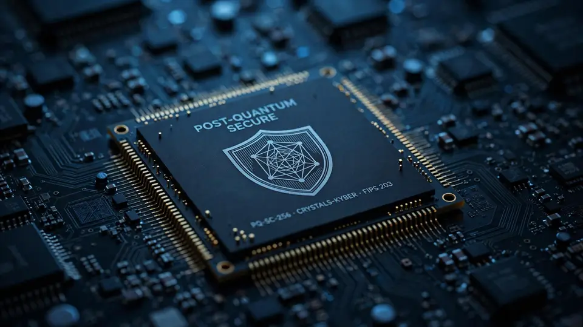

WISeQey launches WISMind.AI: a trust layer for autonomous AI agents with verifiable IDs and quantum-proof credentials
- Who: WISeQey Corp. (Nasdaq/SIX: WQEY), formerly WISeKey International Holding AG; Founder, Chairman and CEO Carlos Moreira.
- What: WISMind.AI, a trust platform for autonomous AI agents launched October 22, 2026 in Geneva — it verifies which agent is acting, on whose authority, under which rules, and whether its output can be trusted.
- Stack: WISeID + Keystone identities; the OISTE/WISeQey Root of Trust (trusted for more than 25 years); SEALSQ post-quantum secure semiconductors; WISeQey PKI; WeCan KYC — packaged as “Know Your AI” (KYAI) and “Know your Agent” (KYA).
- Developer program: opens in the coming months — APIs, SDKs, a sandbox with test credentials, documentation and reference integrations, plus a directory of trusted agents; works with existing agent frameworks, no model change required. More detail at Quantum Days in Cannes, November 2026.
- Scale and rollout: WISeQey cites 1.6 billion microchips deployed; its own group — SEALSQ, WISeSat.Space, SEALCOIN, Quantisimo, SEALQuantumSovereign — becomes client zero, starting with pilots in customer service, IT ops, finance, supply chain, and knowledge work.
WISeQey Corp. on Thursday announced the launch of WISMind.AI, a trust platform built for the age of autonomous AI agents. The Geneva-based company — formerly WISeKey International Holding AG and traded on Nasdaq and SIX as WQEY — says WISMind.AI will help enterprises, governments, and developers verify which AI agent is acting, on whose authority, under which rules, and whether its output can be trusted.
The pitch is direct: agents are graduating from answering questions to taking action — booking, buying, signing, negotiating, and transacting with each other. Each of those actions raises a question today's AI stacks can't reliably answer: who is this agent, who authorized it, and can its output be trusted? WISMind.AI answers with “Know Your AI” (KYAI) and “Know your Agent” (KYA) — the compliance playbook of banking, rebuilt for the agent economy.
What’s in the stack
WISMind.AI pulls five WISeQey technologies into a single developer-facing layer. WISeID and the flagship Keystone project provide cryptographically verifiable identities for agents, humans, and devices. The OISTE/WISeQey Root of Trust — the Swiss cryptographic anchor the company says has been trusted for more than 25 years — anchors the whole thing. SEALSQ post-quantum secure semiconductors give hardware-protected, quantum-resistant credentials; WISeQey PKI handles certificate issuance, lifecycle management, and digital signatures; and WeCan KYC covers compliance and regulated flows. The platform builds on a strategy WISeQey set last August to extend WISeID to autonomous AI agents.

What an agent gets
Every registered agent receives a unique WISeID Keystone credential linking it to its developer, its operator, and the person or organization on whose behalf it acts. On top of that identity sit signed, scoped mandates defining what the agent may do — with real-time revocation — and every output or transaction is digitally signed so recipients can verify its origin and detect tampering. Agents authenticate each other before exchanging data, value, or instructions. A tamper-evident trail records each action for enterprises and regulators to review, and selective-disclosure credentials let an agent prove only what it needs to prove, without exposing personal data.
Client zero: WISeQey itself
WISeQey says its own group will be the platform's first and largest user, in a push it calls the “Intelligent Company.” The rollout covers SEALSQ (including Mireax and Wecan), WISeSat.Space, SEALCOIN, the Quantisimo vehicle, and the SEALQuantumSovereign initiative — proceeding in phases, starting with pilot functions. The company named five first focus areas: customer service, IT operations, finance and accounting, supply chain, and knowledge work — and four principles: start with one bottleneck, fit agents into existing systems and permissions, keep humans in the loop on high-stakes decisions, and measure real returns like handoff rates and error reduction rather than raw automation volume.
Developers get in next
A global WISMind.AI Developer Program is expected to open in the coming months for developers, startups, enterprises, and research teams, with APIs and SDKs to register agents and sign outputs, a sandbox with test credentials, technical documentation and reference integrations, plus co-marketing and a directory of trusted agents. Integration is designed to work with existing agent frameworks and to require no change to the underlying AI model. WISeQey plans to share more on WISMind.AI at Quantum Days in Cannes this November.
What it means
“The internet was built without an identity layer, and we spent twenty-five years fixing that for people and devices,” said Carlos Moreira, WISeQey's founder, chairman and CEO. “AI agents are now becoming economic actors in their own right. Before we let agents spend money, sign contracts or talk to other machines on our behalf, we must know exactly who they are, who they represent and what they are authorized to do.”
The missing-layer claim lands at exactly the moment the question turns commercial: retailers are opening their checkouts to agentic shopping, and enterprise buyers want to know who issues the agent's credentials and who revokes them. WISMind.AI is one of the first products to answer with PKI and silicon instead of policy documents. The harder questions are adoption-shaped: will developers wire in a Swiss PKI layer when the big platforms are bundling their own governance, and will “quantum-proof” credentials matter before quantum attacks do? Watch the developer program — if agents show up, the identity layer is real.
Frequently asked questions
What is WISMind.AI?
WISMind.AI is a trust platform WISeQey launched on October 22, 2026, for autonomous AI agents. It gives each agent a cryptographically verifiable identity, signed and revocable permissions, and digitally signed outputs — so anyone dealing with an agent can check who it is, who it acts for, and whether its output is trustworthy.
How does WISMind.AI protect agents against quantum attacks?
Agent credentials can be anchored in SEALSQ post-quantum secure semiconductors — hardware-protected, quantum-resistant credentials designed to resist “harvest now, decrypt later” attacks. The whole platform sits on the OISTE/WISeQey Root of Trust, the Swiss cryptographic anchor the company says has been trusted for more than 25 years.
When can developers start building on WISMind.AI?
WISeQey plans to open a global WISMind.AI Developer Program in the coming months, with APIs, SDKs, a sandbox with test credentials, documentation, and a directory of trusted agents. Integration is designed for existing agent frameworks without changing the underlying model, and the company says it will share more at Quantum Days in Cannes in November 2026.